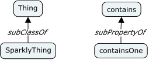
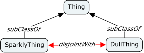
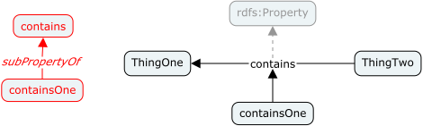
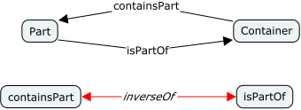

Conceptual: CmapTools
The IHMC CmapTools software empowers users to construct, navigate, share and criticize knowledge models represented as concept maps. We use these tools because the very basis of the concept map is rooted in a very simple set of primitives; the concept and the linking phrases that relate concepts; that's it. You can add some styling to the diagram, and we do, but that doesn't change the meaning in any way other than by convention.

The CmapTools Interface
This simplicity means that the time you spend using the tools is time spent thinking about the concepts and relations, not about which shape, which of the many relationship types, whether this model element is allowed to be linked to this model element in this type of diagram. It's a very direct and immediate experience, something that also translates easily from whiteboard or napkin sketches to computer easily and quickly.
Building Concept Maps
Here are some useful quotes from the CmapTools web site:
- Concept maps are graphical tools for organizing and representing knowledge in an organized fashion.
- Cmap products empowers users to construct, navigate, share and criticize knowledge models represented as concept maps.
- Concept maps express explicitly the most relevant relationships between a
set of concepts. This relationship is depicted by means of the linking
phrases forming propositions. - In a concept map, each concept consists of the minimum number of words needed to express the object or event, and linking words are also as concise as possible and usually include a verb.
- It is impossible to characterize any concept without its relation to other concepts.
- More abstract concepts however cannot be described as having a cognitive representation as a category.
Specific Conventions
One convention you will see immediately is the use of the subClassOf linking
phrase between concepts. This should be seen as expanding to the RDF predicate
rdfs:subClassOf and to indicate that it is a meta-phrase it is always
rendered in italics as show in the following.

In some cases sub-classes of a common parent class are incompatible, that is
an individual may not be an instance of both classes. In OWL terms these
two classes are disjoint. To describe this we use a similar convention, a
linked meta-phrase disjointWith between the classes. In this case we also
color the lines red to denote that this relation acts as a constraint. This
relation expands to an owl:disjointWith predicate on each class definition.

RDF allows for sub-property definitions and so our concept maps should allow
us to describe them also. We dno not use the same convention as we do for
classes (the invalid left-hand side of the image below), instead we use the
linking phrases of the concept map as-is to define properties. In the example
below contains is clearly a property, however containsOne is also a
property because, by convention, it has an arrow that points to a linking
phrase that is not italic (linking to italic phrases has no meaning). Also,
this implies that a linking phrase could also have an arrow to another concept
which would imply that the concept is itself a property unless it's usage
elsewhere would prohibit that. In this diagram we show a greyed-out link to
the root rdfs:Property which is of course implied for all linking phrases
with no explicit parent.

OWL allows us to denote that one relation is the inverse of another, this is
particularly valuable in the presence of inference, but even without it is
useful knowledge and so we should capture it. We use a similar convention to
the disjointWith example above, as shown below. This results in the addition
of an owl:inverseOf predicate to each property definition.
